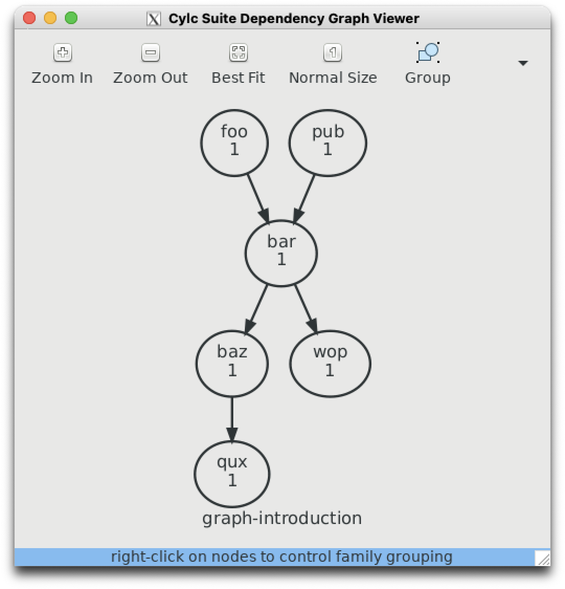
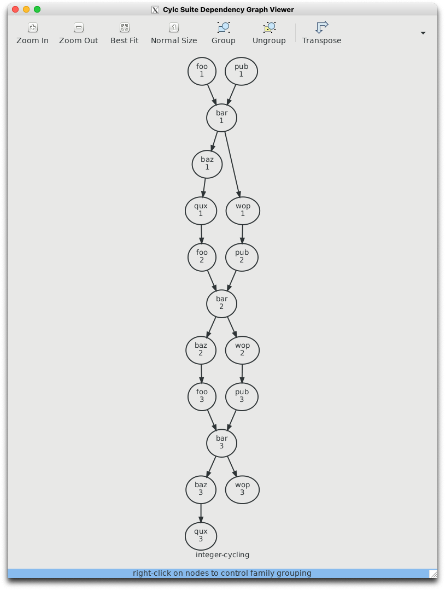
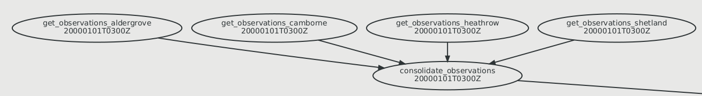
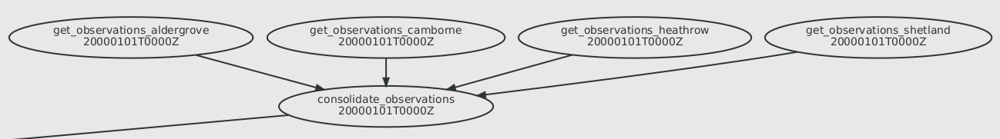
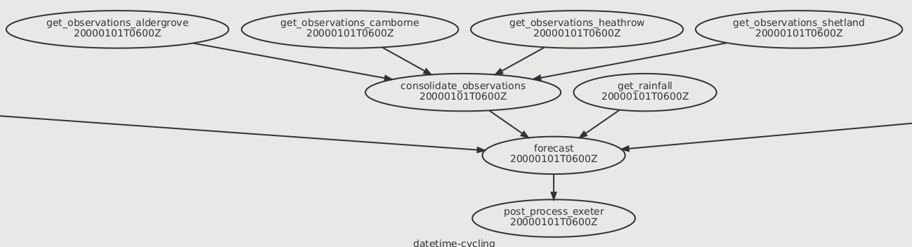
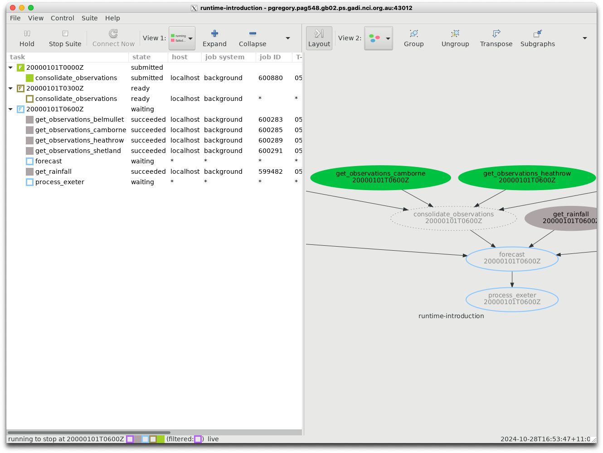
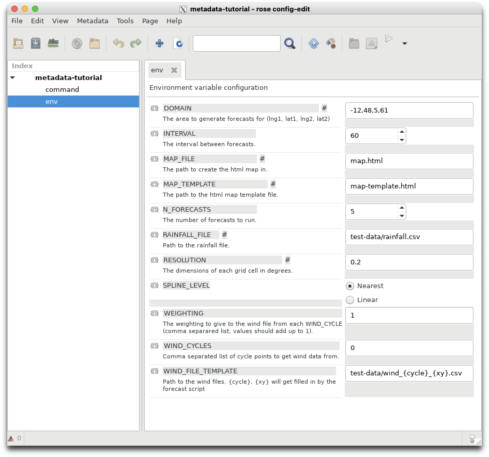

Introduction to Rose/Cylc#
Running an atmospheric simulation is a complex process, requiring co-ordination of many separate tasks. To co-ordinate these tasks, we requirer a job scheduler, or a workflow engine.
These tutorials assume:
You have an NCI account on
gadi.You can access a command-line terminal on
gadi(either via ansshsession or using theAREresearch environment)
If you don’t have an any of the above, follow the links here
If using an
sshsession, you have an X-Windows manager on your local client PC/laptop (either Windows, Mac or Linux) which allows you to interact with Graphical User Interfaces (GUIs) generated ongadiusing the X-windows protocol. Linux supports X-windows natively, Mac OS requires the installation of ‘Xquartz’.
See here for more information for Mac users.
Windows users have a variety of options. It’s also suggested your ssh .config file contains the following entries:
Host *
ServerAliveInterval 60
ForwardX11 yes
ForwardX11Trusted yes
TCPKeepAlive no
Host gadi.nci.org.au
HostName gadi.nci.org.au
User <insert your username here>
This will help keep your X-windows session active in short periods when you are away from your keyboard.
You have, or in the process of obtaining, a UK Met Office Science Repository Service (MOSRS) account. If you haven’t started this, please contact Heidi Nettelbeck at ACCESS-NRI (heidi.nettelbeck@anu.edu.au).
You have memberships to the following
gadiprojects:hr22accesski32ki32_mosrs
If you don’t have membership to these gadi projects, click here to apply.
Shell scripts and running jobs on Linux#
Typically we run programs (or apps) on a linux computer using a shell scripts. We use the bash shell to interpret input from the command-line to execute programs.
If you are unfamiliar with the linux command command line, click below.
Click to expand
For example, if you login to gadi and type ls -la, at the command-line you are executing the program ls with the additional arguments la. The output of the program is then directed via standard output to your terminal.
We can then create bash ‘scripts’ which allows us to process multiple inputs and to automate tasks from the command line instead of having to type everything manually. A bash script is simply a text file with a list of commands, that we give special permissions to, that allows the Linux operating system to execute it as a program.
If you want more familiarity with bash, there are many on-line tutorials and references available, e.g.:
or
https://www.geeksforgeeks.org/bash-scripting-introduction-to-bash-and-bash-scripting/
You can follow those tutorials on gadi but you will need to use a different text editor to gedit as it is not installed. You can use vi if you’re familiar with it, otherwise you can use nano which will run inside a terminal window, or type nedit & to launch the nedit GUI text editor. The & tells bash to run this job ‘in background’, which allows you to continue typing inputs via the command-line while the nedit window is active.
A deeper bash reference can be found here:
https://learn.microsoft.com/en-us/training/modules/bash-introduction/
Depending on your prior experience with Linux and bash, you may want to spend a few days working through these tutorials and examples to gain a better understanding of how bash commands and bash ENVIRONMENT variables work and familiarise yourself with the Linux directory structures on gadi.
Typically you will use bash scripts to execute programs required to simulate the atmosphere, whether these programs are pre-compiled executables (e.g. the Unified Model itself), python scripts for pre-processing or post-processing, or bash commands themselves.
When we execute programs from the gadi command-line, we are using an ‘interactive’ session. Typically this is used for small programs that require very few resources (i.e. memory, processors, disk space) and can be executed in a few seconds or minutes. The gadi login nodes (i.e. the external servers you connect to via ssh) are designed to support small tasks such as:
Editing files, build programs, install software in your home/project space, etc.
Download/upload small amount of data (a few GB)
Run/test/debug programs:
Not exceeding 30-minute CPU cumulative time limit
Not exceeding 4GiB memory
Submit and monitor PBS jobs
These guidelines are sourced from Introduction to Gadi
For larger tasks, a super-computer uses a batch-scheduling system whereby bash scripts are submitted to a job scheduler queue with requests for memory, processors and storage. The job scheduler then processes each jobs when resources become available.
The NCI supercomputer gadi uses the PBS job scheduler. Documentation is available here:
https://opus.nci.org.au/pages/viewpage.action?pageId=236880320
Note that documentation contains information on how to run an ‘interactive’ PBS job session on a gadi compute node, which will allow you to interactively edit files and run programs that exceed the capacity of the gadi login nodes.
Tip
The gadi compute nodes are not externally connected to the internet, so you won’t be able to connect to gitlab or copy files from external sources when logged into a compute note.
But, what if we have a complex set of tasks that must run in a particular sequence? Can we create a scheduler which processes PBS jobs in a user-specified workflow?
Task Scheduling for Atmospheric Simulation#
A good example of a complex task that must run in a particular sequence is a historical atmospheric simulation. Typically for a longer, multi-day simulation, the sequence of tasks involves:
Reading in a global or regional atmospheric analysis with the correct valid time.
Read in ocean and land data for the same valid times.
Read in atmospheric and land ancillary data (e.g. topography, soil types, vegetation fields, aerosols, rivers etc.)
(optional) - create ‘lateral boundary conditions’ by slicing an area of interest from a global or regional analysis.
Regrid the input data onto our domain of interest.
Run a short-term atmospheric forecast model using the above inputs.
Repeat this process for as many hours or days (or weeks, months or years!) that are required.
Continual repetition of this process requires the interaction of many separate tasks. We need a system which submits programs, monitors their progress, keeps track of the current time and executes each task according to an ordered set of dependencies (i.e some tasks cannot run until some upstream tasks have finished).
In order to do this, we require what is known as a workflow engine, which is a fancy name for a task scheduler.
The Cylc work engine#
Recently, the New Zealand National Institute of Water and Atmospheric Research (NIWA) developed its own task scheduler to handle its operational workflows - cylc. This scheduler was so elegant, powerful and (relatively) simple to use that it was adopted by the UK Met Office, who wrapped an external software layer - rose - around the cylc engine.
Every time you run an atmospheric simulation using the UK Met Office’s Unified Model (‘UM’), you will be using cylc. All ACCESS simulations use the UM as its atmospheric model.
When we refer to rose/cylc, we are referring to a rose framework (which constitutes various GUI tools, scripts and namelists) which launches the cylc workflow engine.
To understand how cylc works, visit the documentation here:
https://cylc.github.io/cylc-doc/7.9.3/html/index.html
Note that gadi is still using an earlier version of cylc (7.9.3) so make sure you select the correct version of the documentation. Check the URL and the headers/banners on the pages themselves. The latest version of cylc (8.3.4) contains some significant differences.
First cylc tutorial#
Let’s run through the tutorial here:
https://cylc.github.io/cylc-doc/7.9.3/html/tutorial.html
To launch cylc on gadi you need to load the cylc software into your interactive command-line session. You will also need to specify a ‘persistent session’ in order to load the cylc module. The best way to do this to to execute the following commands from a
gadi terminal:
$ persistent-sessions start cylc-test
Note
Type everything after the $ into your terminal’s command line, i.e. don’t include the $. In this document the $ is used to distinguish commands you need to type (or copy from your browser) from contents of text files etc. You will notice that a gadi command line usually ends with a $, e.g.
<username>@gadi-login-01]$
This should generate output containing the following:
session <random text string> running - connect using
ssh cylc-test.<user-id>.<project>.ps.gadi.nci.org.au
We then need to add the name of this session to the contents of a text file /.persistent-sessions/cylc-session. We can do this using the cat command from the command line.
$ mkdir -p ~/.persistent-sessions
$ cat > ~/.persistent-sessions/cylc-session <<< cylc-test.<user-id>.<project>.ps.gadi.nci.org.au
Warning
Make sure you insert your values of <user-id> and <project> into the above command. i.e replicate the output generated from your earlier persistent-session start cylc-test command.
These commands use the bash program cat (short for ‘catalogue’) to create a text file called cylc-session in the directory ~/.persistent-sessions/ which will contain the text DUMMY.
Remember ~ is a bash short-cut which refers to your home directory on gadi.
Let’s check the contents of this file are correct by using more at the command line.
$ more ~/.persistent-sessions/cylc-session
cylc-test.<user-id>.<project>.gadi.nci.org.au
You will learn more about ‘persistent-sessions’ in a later section. When you are running UM jobs against specific gadi projects, you will need to specify more arguments for your when launching persistent sessions. But the session we have launched above (‘cylc-test’) will suffice for these tutorials.
Let’s login to your new ‘persistent-session’ using ssh:
$ ssh -Y cylc-test.<user-id>.<project>.ps.gadi.nci.org.au
Then you can load the cylc software.
$ module use /g/data/hr22/modulefiles
$ module load cylc7
This should generate the following output:
Using the cylc session cylc-test<etc>
Loading cylc7/24.03
Loading requirement: mosrs-setup/2.0.1
Follow the instructions in section 7.6 - 7.9 of the tutorial. Begin with
$ cylc import-examples /tmp
This will create a list of cylc examples files in
~/cylc-run/examples
All your future rose/cylc tasks to run the UM will also be deployed in your ~/cylc-run directory.
Let’s run the ‘Hello World’ example. Go to the following path in ~/cylc-run directory (the path is actually different to the official documentation):
$ cd ~/cylc-run/examples/7.9.7/tutorial/oneoff/basic
Using a text editor of your choice (vi, nedit, nano, emacs, Microsoft VS Code), copy the contents from the tutorial into a file named suite.rc.
You will need to copy the ‘hello world’ suite.rc file from tutorial section 7.9 available here:
https://cylc.github.io/cylc-doc/7.9.3/html/tutorial.html#hello-world-in-cylc
Once complete, if you examine the contents of this file using the bash command-line program more, it should resemble this:
$ more suite.rc
[meta]
title = "The cylc Hello World! suite"
[scheduling]
[[dependencies]]
graph = "hello"
[runtime]
[[hello]]
script = "sleep 10; echo Hello World!"
The program more is similar to cat but it uses the space bar to quickly step through a file contents in the terminal, whereas cat dumps it all in one go.
Ok, let’s run this from the command line by executing the following:
$ cylc run
Note
Make sure you are in the current working directory containing your suite.rc file, i.e. ~/cylc-run/examples/7.9.7/tutorial/oneoff/basic to run a cylc suite.
Your output should contain the following.
$ cylc run
Loading cylc7/24.03
Loading requirement: mosrs-setup/2.0.1
._.
| | The Cylc Suite Engine [7.9.9]
._____._. ._| |_____. Copyright (C) 2008-2019 NIWA
| .___| | | | | .___| & British Crown (Met Office) & Contributors.
| !___| !_! | | !___. _ _ _ _ _ _ _ _ _ _ _ _ _ _ _ _ _ _ _ _ _ _ _ _
!_____!___. |_!_____! This program comes with ABSOLUTELY NO WARRANTY;
.___! | see `cylc warranty`. It is free software, you
!_____! are welcome to redistribute it under certain
*** listening on https://<your persistent session>:<port number>/***
To view suite server program contact information:
$ cylc get-suite-contact basic
Congratulations! You’ve just run your first cylc suite.
Second cylc tutorial#
Let’s move onto another cylc tutorial, which is located in the rose documentation. This tutorial deals with creating graphs, i.e. how we dictate the sequence in which tasks are run. The version of rose currently running supported on gadi for ACCESS-UM experiments is 2019.01.7 so make sure you using the following URL :
https://metomi.github.io/rose/2019.01.8/html/tutorial/cylc/scheduling/graphing.html
Let’s follow the practical section at the bottom of that page.
Tip
In you are starting this tutorial from a fresh login session, remember to login to your specified ‘persistent session’. We have to use the following module use and module load commands to add rose and cylc to our paths on gadi inside the specific session.
$ module use /g/data/hr22/modulefiles
$ module load cylc7
Back to the tutorial:
$ mkdir ~/cylc-run/graph-introduction
$ cd ~/cylc-run/graph-introduction
Create a suite.rc file in this directory using the template provided, and then create a task graph using the necessary syntax. When you execute
$ cylc graph .
the results show match the below image.

Remember the ‘.’ in a bash command means ‘the current directory’. So the above command means `create a graph of the suite that exists in the current directory’.
Tip
Here is a web-link containing a review of all ‘special characters’ in bash:
https://www.howtogeek.com/439199/15-special-characters-you-need-to-know-for-bash/
Third cylc tutorial#
Read through the information available here :
https://metomi.github.io/rose/2019.01.8/html/tutorial/cylc/scheduling/integer-cycling.html
This tutorial is important as it explains how to build a suite that repeats the same sequence of tasks. For a weather or climate simulation, you will be running a set of ‘UM’ tasks that will need to be repeated every hour, six hours, every day, or every few days, depending on your problem. You may need to repeat these tasks for weeks, months, years or decades depending on your application.
Regardless of your application and temporal resolution, you will need to be acquainted with how cylc handles “cycling” or “repeating” workflows. This will help you understand how to diagnose errors in task flows should they arise, or how to add new tasks if required.
Run through the steps in the practical until your graph resembles the below images.

Fourth cylc tutorial#
Let’s move onto the next tutorial which looks at date-time cycling, i.e. controlling task flow using real date-time objects. This is how your weather and climate rose/cylc suites will be controlled.
Access the fourth tutorial here:
https://metomi.github.io/rose/2019.01.8/html/tutorial/cylc/scheduling/datetime-cycling.html
Remember to load the rose and cylc executables into your current gadi environment using the module load commands.
Tip
You can use the bash alias function to write a simple macro to load the rose/cylc environment with a simple command.
e.g. in my ~/.bash_profile file I declare the following:
alias start_rose="module use /g/data/hr22/modulefiles;module load cylc7"
Then if I’m at the terminal and I want to use rose/cylc I can just type the following:
$ start_rose
Loading cylc7
Loading requirement: mosrs-setup/2.0.1
Work your way through the practical exercise, which in this case is a simple taskflow for weather forecasting.
Your final cylc graph should include the following sections:
  
Fifth cylc tutorial#
Now that we understand how define a workflow in cylc as a sequence of tasks and dependencies, how do we determine what each task actually comprises?
In this section you will learn how to assign executables (e.g. bash scripts, python scripts, or UM binaries) to a task.
Read through the following tutorial :
https://metomi.github.io/rose/2019.01.8/html/tutorial/cylc/runtime/introduction.html
You will also learn many important tasks including:
How to run a complex suite
How to use the cylc GUI to monitor task flows within a suite
Understand the
~/cylc-run/<suite-name>/directory structure to find log files, temporary input and output files and ancillary data.
When running this sample suite, your cylc GUI will resemble the following (assuming you have activated “graph view” in the second view using the buttons in the toolbar).

You can inspect other job log files, e.g the get_rainfall task, e.g.
more log/job/20000101T0600Z/get_rainfall/NN/job.out
Suite : runtime-introduction
Task Job : 20000101T0600Z/get_rainfall/01 (try 1)
User@Host: pag548@pgregory.pag548.gb02.ps.gadi.nci.org.au
2024-10-28T05:54:42Z INFO - started
2024-10-28T05:54:43Z INFO - succeeded
Note
In the cylc directory structure, the subdirectory NN will always point to the latest job submission number. Logfiles from previous job submission attempts are retained to help keep track of earlier failures. Keep this in mind when you have to repeat a job submission because earlier jobs failed because of an error.
Sixth cylc tutorial#
The next tutorial expands our cylc knowledge to include runtime configuration. How do we use bash environment variables to control the way the suite runs? E.g. can we use environment variables to specify the location of input data files?
Have a read through the following exercises, but DO NOT attempt the practicals.
https://metomi.github.io/rose/2019.01.8/html/tutorial/cylc/runtime/runtime-configuration.html
This tutorial is broken and will not run under cylc7.
As mentioned earlier in the section on running jobs on Linux running on gadi, cylc is configured to use the PBS batch system to schedule jobs.
This tutorial describes how we can pass PBS job directives using cylc and discusses how to start, stop and restart cylc suites and individual cylc tasks.
Rose#
Rose was created as a way to harness cylc to run the UM. Typically, it creates a directory app which contains rose-application files (e.g. rose-app.conf) which is a way to prescribe large amounts of input configuration data, e.g.
Fortran namelists
bashenvironment variables
See https://cylc.discourse.group/t/dealing-with-long-list-of-environmental-variables/993/4 for an example.
First Rose tutorial#
Now we will construct our first rose suite to learn how rose uses configuration files to pass parameters (typically bash environment variables or fortan namelists) to tasks controlled by cylc.
A rose “application” is a rose configuration which executes a defined command.
Let’s run through the exercises available here:
https://metomi.github.io/rose/2019.01.8/html/tutorial/rose/applications.html
Once your rose application has been complete, you should be able to execute it and generate outputs similar to those below.
$ rose app-run -C ../
[INFO] export CYLC_TASK_CYCLE_POINT=20171101T0000Z
[INFO] export DOMAIN=-12,48,5,61
[INFO] export INTERVAL=60
[INFO] export MAP_FILE=map.html
[INFO] export MAP_TEMPLATE=map-template.html
[INFO] export N_FORECASTS=5
[INFO] export PATH=/home/548/pag548/rose-tutorial/application-tutorial/bin:/g/data/hr22/apps/cylc7/rose_2019.01.7/bin:/g/data/hr22/apps/cylc7/24.03/bin:/g/data/hr22/apps/mosrs-setup/1.0.1/bin:/home/548/pag548/.local/bin:/home/548/pag548/bin:/opt/pbs/default/bin:/opt/nci/bin:/opt/bin:/opt/Modules/v4.3.0/bin:/bin:/usr/bin:/usr/local/sbin:/usr/sbin:/opt/pbs/default/bin
[INFO] export RAINFALL_FILE=test-data/rainfall.csv
[INFO] export RESOLUTION=0.2
[INFO] export WEIGHTING=1
[INFO] export WIND_CYCLES=0
[INFO] export WIND_FILE_TEMPLATE=test-data/wind_{cycle}_{xy}.csv
[INFO] install: map-template.html
[INFO] source: /home/548/pag548/rose-tutorial/application-tutorial/file/map-template.html
[INFO] create: test-data
[INFO] install: test-data
[INFO] source: /home/548/pag548/rose-tutorial/application-tutorial/file/test-data
[INFO] command: forecast $INTERVAL $N_FORECASTS
Plotting diasbled
If you plot the file ~/rose-tutorial/application-tutorial/run/map.html it should resemble this:

Second Rose tutorial#
In the next rose tutorial you will learn how to add metadata to a rose suite. Metadata has a variety of uses in a rose suite. Follow the exercises located below to find out what they are.
https://metomi.github.io/rose/2019.01.8/html/tutorial/rose/metadata.html
Note
In this tutorial the command rose config-edit & is used to edit the rose suite. In most of the 21stCenturyWeather and ACCESS-NRI documentation, the short-cut rose edit & is used instead.
At the conclusion of this tutorial, your rose edit window should look like this.

Third Rose tutorial#
In this tutorial you will bring all of your knowledge of rose and cylc together to start, stop and restart a fully integrated rose/cylc suite.
You will learn how to control the overall configuration of a rose/cylc suite using the rose-suit.conf file.
Follow the exercises contained in this link:
https://metomi.github.io/rose/2019.01.8/html/tutorial/rose/suites.html
Note
This exercise refers to Jinja2. Jinja is a templating language, i.e. a way to create extensive ASCII (text) documents by using logic to loop over variables or parameters to prevent repetitive typing of repeated strings or text. The homepage for the Jinja project is here:
https://jinja.palletsprojects.com/en/stable/
There is short review of how Jinja works here : https://metomi.github.io/rose/2019.01.8/html/tutorial/cylc/runtime/configuration-consolidation/jinja2.html.
You don’t have to do the tutorials, but just be conscious that whenever you see braces such as {{ }} in a suite.rc file, those braces surround a variable that will be replaced with Jinja. Likewise, Jinja logic such as {% if ... %} or {% for ... } within the suite.rc will be processed to produce the final suite.rc.processed file executed by cylc which is created in your ~/cylc-run/<rose-id> runtime directory.
In conclusion, Jinja is a way for us to create very long suite.rc files by looping over input parameters.
You will have to make the following changes to suite.rc to make the tutorial work.
[jinja2:suite.rc]
station="camborne", "heathrow", "shetland", "aldergrove","belmullet"
Otherwise the suite will not run. It will fail will the following errors:
[INFO] install: suite.rc
[INFO] REGISTERED rose-suite-tutorial -> /home/548/pag548/cylc-run/rose-suite-tutorial
[FAIL] cylc validate -o /scratch/gb02/pag548/tmp/tmp45a3jD --strict rose-suite-tutorial # return-code=1, stderr=
[FAIL] ERROR, parameter station out of range: station=belmullet
This error can be tracked down using the bash command grep which searches for strings in ASCII (text) files.
$ grep belmullet *
grep: app: Is a directory
grep: bin: Is a directory
grep: lib: Is a directory
grep: meta: Is a directory
suite.rc: [[get_observations<station=belmullet>]]
This tells you one of the tasks in suite.rc expects a station value of belmullet. So you can add it to the list of station variables defined in rose-app.conf. Another solution would be to remove the task [[get_observations<station=belmullet>]] from the suite.rc file.
To check the suite has been installed correctly, your ~/cylc-run/rose-suite-tutorial/ directory should contain the following:
$ ls ~/cylc-run/rose-suite-tutorial/
app bin lib log meta share suite.rc work
Note the suite.rc file installed in your ~/cylc-run/rose-suite-tutorial/ directory now contains jinja directives appended to the beginning of the file.
$ more ~/cylc-run/rose-suite-tutorial/suite.rc
#!jinja2
{# Rose Configuration Insertion: Init #}
{% set CYLC_VERSION="7.9.7" %}
{% set ROSE_ORIG_HOST="gadi-login-09.gadi.nci.org.au" %}
{% set ROSE_SITE="nci" %}
{% set ROSE_VERSION="2019.01.7" %}
{% set station="camborne", "heathrow", "shetland", "aldergrove","belmullet" %}
{% set ROSE_SUITE_VARIABLES={
'CYLC_VERSION': CYLC_VERSION,
'ROSE_ORIG_HOST': ROSE_ORIG_HOST,
'ROSE_SITE': ROSE_SITE,
'ROSE_VERSION': ROSE_VERSION,
'station': station,
} %}
[cylc]
[[environment]]
CYLC_VERSION=7.9.7
DOMAIN=-12,48,5,61
RESOLUTION=0.2
ROSE_ORIG_HOST=gadi-login-09.gadi.nci.org.au
You can skip the section about Rose Bush as this software is no longer available on gadi.
In the practical section complete section 1 but DO NOT attempt section 2 as the suite is missing a list of UK Met Office station data and will fail.
Rosie#
A few words about Rosie. Rosie is a tool for managing rose suites. You will use rosie commands to check-out existing rose suites (or “roses”) to run your weather and climate experiments.
If you are making major modifications and building new rose suites, you will be committing your new suites to the central “roses” repository using rosie.
Have a quick read through the documentation available here : https://metomi.github.io/rose/2019.01.8/html/tutorial/rose/rosie.html
There is no need to complete the practical. We will use rosie in the next exercise to interface with the UK Met Office Science Repository Services (MOSRS) to check-out our next exercise.
Other sources of information#
The British National Centre for Atmospheric Science contains some useful hints, tips and trouble shooting for rose/cylc.
https://cms.ncas.ac.uk/rose-cylc-hints/
It also contains a searchable forum :
https://cms-helpdesk.ncas.ac.uk
Documentation for an older rose version (2018.02.0) can be found here:
https://metomi.github.io/rose/2018.02.0/html/rose-single-page.html
That link contains a lot of good rose and cylc information in a single location. Some of the information is out-of-date.
It also contains some useful rosie information, e.g.
https://metomi.github.io/rose/2018.02.0/html/rose-rosie-advice.html
You can also search and post to the ACCESS-Hive forums.